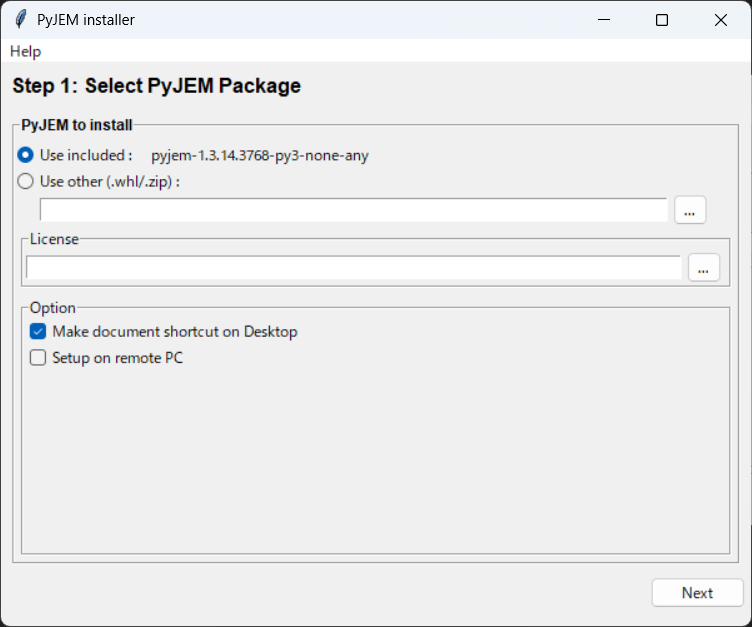
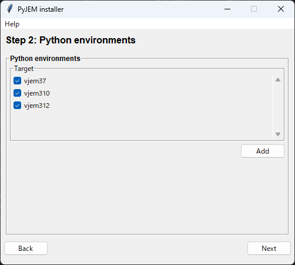
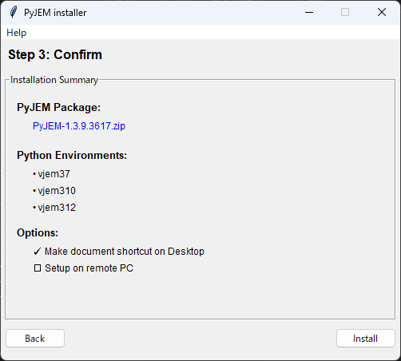
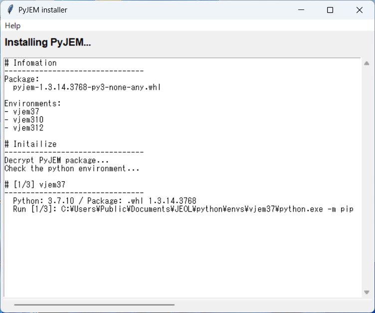
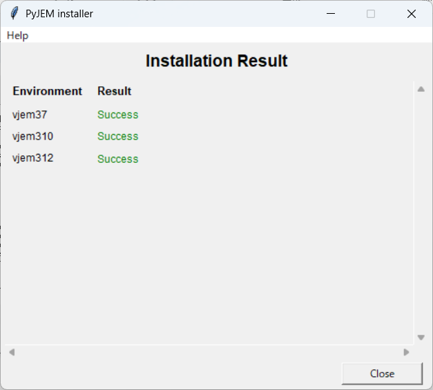

Step 3. PyJEM¶
This document explains the procedure for installing PyJEM using setup.exe.
Simply follow the on-screen instructions and the installation will be complete.
We provide the setup.exe here.
Prerequisites¶
Before starting the installation, confirm the following:
Item |
Description |
|---|---|
Installer |
|
License Key |
Included in media VEM1342-07 or later, or VEM2066-00 or later |
Python Environment |
Either |
About License Key
Depending on your media version (VEM1342), the filessetup.exeandLICENSE_KEYmay differ. See the installation steps for details.
Steps¶
Step 0: Launch the Installer¶
Double-click setup.exe to launch it.
Step 1: License Agreement¶
First, the License Agreement screen will be displayed.
Scroll through and read the entire agreement
Check the “I Agree” checkbox
The “Next” button will become enabled, so click it
The “Next” button cannot be clicked without checking this box.
Step 2: PyJEM Package and License Key Selection¶
{kind=link}

■ PyJEM Package Selection:
Option |
Description |
|---|---|
Use included |
Use the package bundled with the installer (normally select this) |
Use other |
Use |
Note: PyJEM libraries are published on the Forum.
■ License Key Configuration:
Click the “…” button to open file selection dialog
Depending on your media version, refer to the table below to select the file
fig: File Selection by Media Version
Media Version |
ISO Structure |
FILE to Select for LICENSE |
|---|---|---|
VEM1342-07 ～ 10 |
|
Select |
VEM1342-11 ～ 12 |
|
Select |
VEM1342-13 ～ VEM2066-01 |
|
Select |
VEM2066-02 and later |
|
Select |
Note: If you have media VEM1342-13 ～ VEM2066-01, select
setup.exefor License.
Note: For VEM2066-02 and later, the media includes a separate
LICENSE_KEYfile along withsetup.exe. Select theLICENSE_KEYfile directly.
■ Options:
Option |
Description |
|---|---|
Make document shortcut on Desktop |
Create a shortcut to documentation on the desktop |
Setup on remote PC |
Use when setting up on a remote PC |
Once configured, click “Next”
Step 3: Python Environment Selection¶
{kind=link}

Check the Python environment where you want to install
By default,
vjem310/vjem312are displayed in the listYou can also add any
python.exeusing the “Add” button
Select at least one and click “Next”
Warning: Clicking “Next” without selecting an environment will show an error.
Step 4: Confirm Installation Contents¶
{kind=link}

Confirm the installation contents.
If everything looks correct, click “Install” to begin the installation.
Step 5: Installation Execution¶
{kind=link}

The log will scroll as installation progresses. Wait until completion.
Warning: Do not close the window during installation.
Step 6: Verify Installation Results¶
{kind=link}

Result |
Meaning |
|---|---|
✅ Success |
Installation successful |
❌ Failed |
Installation failed (click “Log” button to check details) |
Click “Close” to close the installer.
Verification after Installation¶
You can verify a successful installation by running the following in Python:
1import PyJEM
2print(PyJEM.__version__)
1.3.15.3769
If the version number is displayed, the installation is successful! 🎉
❓ Troubleshooting¶
Symptom |
Solution |
|---|---|
“Next” button cannot be clicked (License screen) |
Check the “I Agree” checkbox |
LICENSE_KEY not found error |
Try selecting the |
Environment not displayed in list |
Manually add |
Installation Failed |
Check error details with the “Log” button and retry with administrator privileges |
Old Installer¶
Installer Types:
VEM1342-12～16
Released: 2024/1/24 ～
Support upgrade install
The installation is performed via the UI.
VEM1342-11～12
Released: 2022/4/26 ～
Support upgrade install
The installation is performed via the command line.
VEM1342-07～10
Released: 2021/7/20 ～
Support upgrade install
The installation is performed via the bat file.
VEM1342-02～06
Released: 2018/1/17 ～ 2021/6/9
Unsupport upgrade install
Notes:
Some older installers do not support updates.
Please contact your JEOL sales representative for applicability and details.